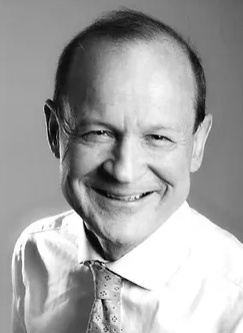
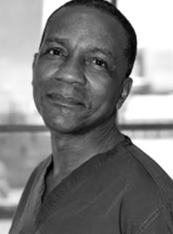

International recruitment doesn’t finish at appointment.
Finding the clinician is one part of the journey. Registration, relocation, family decisions and settling in decide whether the move succeeds — so we help with all of it, including for the clinicians you recruit yourselves.
Retention measured across every international placement we have made: each clinician is still in post. We are deliberately small, fifty-odd placements, not thousands. That is what makes the number possible.
Recruit. Relocate. Retain.
Three ways in, used together or separately. You don’t have to recruit through Ethicare for your people to use any of it.
Recruit
Specialist international sourcing where your own reach needs extending. A short, honest shortlist with the hard conversations already had — never volume.
Relocate
Give directly appointed international hires access to Ethicare Move and the guide library — registration to settling in, free to them, wherever the role came from.
Retain
Preparation is retention. When people feel prepared, supported and that they belong, they are more likely to stay — and we stay in contact through the first year.
Filling the vacancy is only the beginning.
International recruitment fails quietly, and rarely at the shortlist. It fails when a candidate accepts and then withdraws. When registration turns out to be longer or harder than anyone said. When a partner was never really part of the conversation. When someone is recruited to a region they only ever saw as a line in a job description.
And it fails most expensively when a clinician arrives underprepared, works unhappily for a year, and leaves, taking the vacancy, the supervision time and the team’s goodwill with them.
Every one of those outcomes costs more than taking longer to make the right placement.
Three things we do differently, and nothing else
Specialist search
We recruit inside a defined set of professions and two countries. We know the registration routes, the scopes of practice and what good looks like. So the people you meet are relevant, and there are not many of them.
Properly prepared candidates
Registration, relocation, pay, family and destination are discussed honestly before a placement, not after an offer. By the time a CV reaches you, the hard conversations have already happened.
Retention beyond arrival
The objective is not an accepted offer. It is a move that works, for the clinician, their family and your service, two years later, when the novelty has worn off.
Built from inside the health service.
Ethicare was founded by Sophie Careem, previously a Senior Service Improvement and Transformation Manager at the Royal Free London NHS Foundation Trust. The work there was workforce transformation: understanding why a service could not fill a role, what happened to teams carrying long-term gaps, and which changes actually held.
That background is the reason this company exists in the shape it does. It is why we talk about vacancy pressure, supervision capacity and team stability rather than talent pipelines, and why we would rather slow a search down than hand you a placement that unravels in a year.
International recruitment works when it is treated as workforce transformation, not a transaction.Sophie Careem · Founder

Six stages, one person accountable throughout
Understand the service
Your team, your constraints, the supervision you can offer and what the role needs.
Search & qualify
A targeted search, then the long conversations that decide whether someone is genuinely a candidate.
Registration & relocation readiness
Where they actually stand with the board, the visa and the practicalities of moving a household.
Employer interview
A short, relevant shortlist, prepared for your process rather than coached through it.
Offer & mobilisation
Offer, registration, visa and the move run in parallel, with the threads held in one place.
Aftercare
We stay in contact after arrival, because the first year is where retention is won or lost.
The work starts before we send you a CV.
Screening a CV takes minutes. Establishing whether someone will still be in your department in two years takes considerably longer, and it is the part that decides whether the placement holds. Before anyone is put forward, we have worked through:
Sometimes that work ends with us advising a clinician not to move yet, because registration is not ready, because a partner is not ready, or because the honest answer is that this is not the right year. We would rather lose that placement than pass you the risk.
To be precise about what we check
We take up professional references and confirm current good standing, and we coordinate the registration and visa process so nothing stalls. Qualifications and eligibility are verified by the professional boards. Identity, police and health checks sit with the boards and the immigration authority. We do not claim those as our own checks, and we will tell you exactly which stage anything is at. The full standard, approved by our clinical board, is published at Our clinical standard.
What it takes to fill a role that has stayed open
A regional allied health service with a role that had been open long enough for the gap to feel normal. Local recruitment had not moved it, and the location was never going to sell itself from a job description alone.
A small, targeted search rather than a volume campaign. The decisive conversations were not about the role at all: where the candidate stood with the board, what their partner would do, what the town would actually be like on a wet Tuesday in July, and whether the timeline was realistic for a family.
Registered, relocated and still in post. The service filled a role it had stopped expecting to fill, and did not have to run the process again twelve months later.
Sophie always puts candidate care first, and has invested heavily in preparing candidates for a successful move, ensuring they have as much support as possible when relocating to a new country.
Maree LoynesFormer Allied Health Recruitment Specialist, Health New Zealand MidCentral
Recruiting to a place someone has never been
Selling an unfamiliar location takes more than sending a job description. A clinician weighing up a regional move wants to know about housing, schools, what their partner could do, how far the nearest airport is and what an ordinary weekend looks like.
We can answer all of that in detail, for every region we recruit into, because we have already written it down.
See the destination guides →The support runs the whole length of the move
Candidates do not just receive a job description. They have registration pathway guidance, cost-of-moving tools, CV support, interview preparation and several hundred pages of destination detail, before they ever speak to you.
Your international recruitment team can appoint someone directly and send them to Ethicare Move — they arrive with the same preparation, and your service keeps the workforce outcome.
Good international recruitment works both ways
We work best with organisations that treat international recruitment as a long-term workforce strategy rather than a quick supply of CVs. Where that is not the brief, we will say so early. It saves everyone a year.
A short list, kept honest
We would rather tell you we are not the right partner than take a brief we cannot serve. If your need sits alongside these, ask. We will give you a straight answer.
New Zealand Profession-specific boards
- Sonographers General and cardiac scopes
- Radiographers & medical imaging technologists
- Radiation therapists
- Consultant radiologists
- Physiotherapists
- Occupational therapists
- Psychologists
- Anaesthetic technicians
- General practitioners
Australia National registration, Ahpra
- Sonographers
- Radiographers
- Radiation therapists
- Consultant radiologists
- Nuclear medicine technologists
Australia is the newer of the two markets for us, medical imaging and radiation therapy first, and we say so rather than implying national coverage across every profession.
Small enough that you deal with the people who know the candidates
There is no account layer between you and the search: fewer briefs, taken further, with senior involvement in every one. Clinical governance sits with two senior clinicians.
Sophie CareemFounder. Former NHS service improvement & workforce transformation, Royal Free London.
Prof Alastair SutcliffePaediatrics, UCL & Great Ormond Street Hospital.
Dr Jude A. ObenHepatology, King’s College London.Tell us what you’re trying to solve.
One difficult vacancy, a specialist search or a workforce gap you can see coming. We will tell you honestly whether we can help, and how long it would realistically take.
Or send us a fully specified vacancy →Candidate enquiries go somewhere else entirely. If you are a clinician looking for a role, start at current opportunities.
Five fields. We reply personally, usually within a working day.